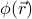
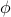

Spatial Textures
Earlier, we generalized the Landau Free energy to account for spatial variations in the texture of the order parameter, by allowing  to vary as a function of space. However, this generalization turned out rather fruitless, because it turned out that any spatial variation would increase the free energy, meaning that the best field configuration was the one that didn't change in space! So we were just as good assuming that  was uniform.
Well, when do spatial variations in actually matter? On this page, we'll give a quick sketch of situations where we'll actually need to take into account the gradient term in the free energy:
boundary effects: how does the order parameter decay from any boundary weirdness into its uniform bulk value? In other words, if we poke the system on its edge, how far does that perturbation extend into the system?
For instance, you might remember from EnM that if you shine light into an absorbing medium, the intensity of the light wave decreases exponentially as a function of distance into the absorptive material, with a characteristic lengthscale that depends on how absorbing the medium is.
domain walls: how does the order parameter cope with conflicting boundary conditions? What happens if we apply a field in one direction at one end of the sample, and in the other direction on the other end? The spins want to point up on one side, but want to point down on the other – what's the spatial pattern for how they interpolate between one end and the other?
Surprisingly, in both of these situations, the characteristic lengthscale for variations in the order parameter is the same correlation length  . In these simple field models, everything changes in space over same lengthscale – the size of local fluctuation patches, the ‘‘skin depth’’ from the boundary, you name it. Well, perhaps it's not too surprising that all spatially-varying-phenomena happen on the same lengthscale, because there's only one lengthscale that enters into the problem. We'll derive it via dimensional analysis, and then if time permits, we'll take a more formal approach by looking at how the field responds to a delta-function impulse.
. In these simple field models, everything changes in space over same lengthscale – the size of local fluctuation patches, the ‘‘skin depth’’ from the boundary, you name it. Well, perhaps it's not too surprising that all spatially-varying-phenomena happen on the same lengthscale, because there's only one lengthscale that enters into the problem. We'll derive it via dimensional analysis, and then if time permits, we'll take a more formal approach by looking at how the field responds to a delta-function impulse.
Finally, we'll take a look at spatial variations of order parameters describing a continuously broken symmetry, such as a spin that can point in any direction on a circle. If we impose contradictory boundary conditions on such fields, we find that the equilibrium configuration is not a domain wall solution (as it was for discrete symmetries), but rather, a continuous twisting sort of solution which is energetically cheaper. The existence of such Goldstone modes highlight a key difference between phases that involve broken discrete and continuous symmetries.
Let's begin.